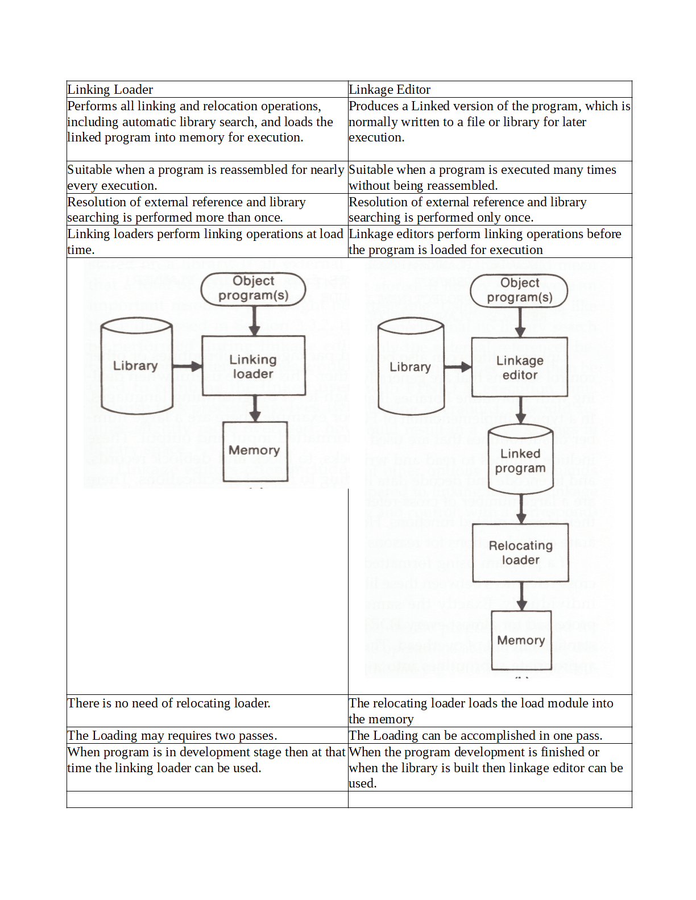
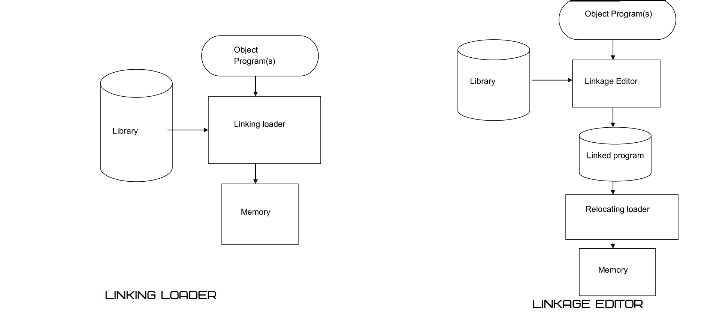

I Love Everything That Makes Me More Human.
Difference Between Linking Loader vs Linkage Editor

What is the main difference between Linking Loader and Linkage Editor?
The main difference between Linking Loader and Linkage Editor is Linking Loader performs all linking and relocation operations, including automatic library search, and loads the linked program into memory for execution. whereas Linkage Editor Produces a Linked version of the program, which is normally written to a file or library for later execution. There is no need of relocating loader in Linking Loader whereas The relocating loader loads the load module into the memory in Linkage Editor.
Comparision Chart For Linking Loader vs Linkage Editor
Diagram for Linking Loader and Linkage Editor
Difference Between Table for Linking loader and Linkage Editor
| Linking Loader | Linkage Editor |
| Performs all linking and relocation operations, including automatic library search, and loads the linked program into memory for execution. | Produces a Linked version of the program, which is normally written to a file or library for later execution. |
| Suitable when a program is reassembled for nearly every execution. | Suitable when a program is executed many times without being reassembled. |
| Resolution of external reference and library searching is performed more than once. | Resolution of external reference and library searching is performed only once. |
| Linking loaders perform linking operations at load time. | Linkage editors perform linking operations before the program is loaded for execution |
| There is no need of relocating loader. | The relocating loader loads the load module into the memory |
| The Loading may requires two passes. | The Loading can be accomplished in one pass. |
| When program is in development stage then at that time the linking loader can be used. | When the program development is finished or when the library is built then linkage editor can be used. |
Linking Loader
Linking Loader performs all linking and relocation operations, including automatic library search, and loads the linked program into memory for execution. The algorithm for a linking loader is considerably more complicated than the absolute loader algorithm. A linking loader usually makes two passes over its input, just as an assembler does. In terms of general function, the two passes of a linking loader are quite similar to the two passes of an assembler:
Pass 1 assigns addresses to all external symbols.
Pass 2 performs the actual loading, relocation, and linking.
The main data structure needed for our linking loader is an external symbol table ESTAB:
(1) This table, which is analogous to SYMTAB in our assembler algorithm, is used to store the name and address of each external symbol in the set of control sections being loaded.
- A hashed organization is typically used for this table.
Two other important variables are PROGADDR (program load address) and CSADDR (control section address):
(1) PROGADDR is the beginning address in memory where the linked program is to be loaded. Its value is supplied to the loader by the OS.
(2) CSADDR contains the starting address assigned to the control section currently being scanned by the loader. This value is added to all relative addresses within the control section to convert them to actual addresses.

Linkage Editor
The linkage editor performs relocation of all control sections relative to the start of the linked program. Thus, all items that need to be modified at load time have values that are relative to the start of the linked program. This means that the loading can be accomplished in one pass with no external symbol table required.
If a program is to be executed many times without being reassembled, the use of a linkage editor substantially reduces the overhead required. Linkage editors can perform many useful functions besides simply preparing an object program for execution.
Ex., a typical sequence of linkage editor commands used:
INCLUDE PLANNER (PROGLIB)
DELETE PROJECT {delete from existing PLANNER}
INCLUDE PROJECT (NEWLIB) {include new version}
REPLACE PLANNER (PROGLIB)

Linkage editors can also be used to build packages of subroutines or other control sections that are generally used together. This can be useful when dealing with subroutine libraries that support high-level programming languages. Linkage editors often include a variety of other options and commands like those discussed for linking loaders. Compared to linking loaders, linkage editors in general tend to offer more flexibility and control.
The execution of any program needs four basic functionalities and those are allocation, relocation, linking and loading. As we have also seen in direct linking loader for execution of any program each time these four functionalities need to be performed.
But performing all these functionalities each time is time and space consuming task. Moreover if the program contains many subroutines or functions and the program needs to be executed repeatedly then this activity becomes annoyingly complex .Each time for execution of a program, the allocation, relocation linking and -loading needs to be done. Now doing these activities each time increases the time and space complexity. Actually, there is no need to redo all these four activities each time. Instead, if the results of some of these activities are stored in a file then that file can be used by other activities. And performing allocation, relocation, linking and loading can be avoided each time.
The idea is to separate out these activities in separate groups. Thus dividing the essential four functions in groups reduces the overall time complexity of loading process. The program which performs allocation, relocation and linking is called binder. The binder performs relocation, creates linked executable text and stores this text in a file in some systematic manner. Such kind of module prepared by the binder execution is called load module. This load module can then be actually loaded in the main memory by the loader. This loader is also called as module loader. If the binder can produce the exact replica of executable code in the load module then the module loader simply loads this file into the main memory which ultimately reduces the overall time complexity.
But in this process the binder should knew the current positions of the main memory. Even though the binder knew the main memory locations this is not the only thing which is sufficient. In multiprogramming environment, the region of main memory available for loading the program is decided by the host operating system. The binder should also know which memory area is allocated to the loading program and it should modify the relocation information accordingly. The binder
Hey there, I'm Nischal.
I am a student, a developer and I specialize in
standards-based Web Development(Django, JS, HTML, CSS ) and ML/DL.
I love Everything that makes me more Human. While
not Coding, I play and/or watch football.
Copyright text 2020 by Nischal!!
Newsletter
A rover wearing a fuzzy suit doesn’t alarm the real penguins. Then What Alarms The Penguins. Subscribe Me To Find Out.
Follow Me